Dark palette superseded on 2026-10-05. The operator requested neutral gray/black dark surfaces. These captures retain the original green palette for historical comparison; the current colour contract and verification status are in the design specification.
Verdict and accepted deviations · Source, budget and reproduction evidence · Design and baseline gallery
Production components from source fnv1a64:14e8acd06e0d4cac, integrated bundle d092f4a7. These 14 retained samples complement the complete 2,432-case matrix: 2,248 images, 184 explicit no-entity skips, zero strict failures. They are not static design mockups.
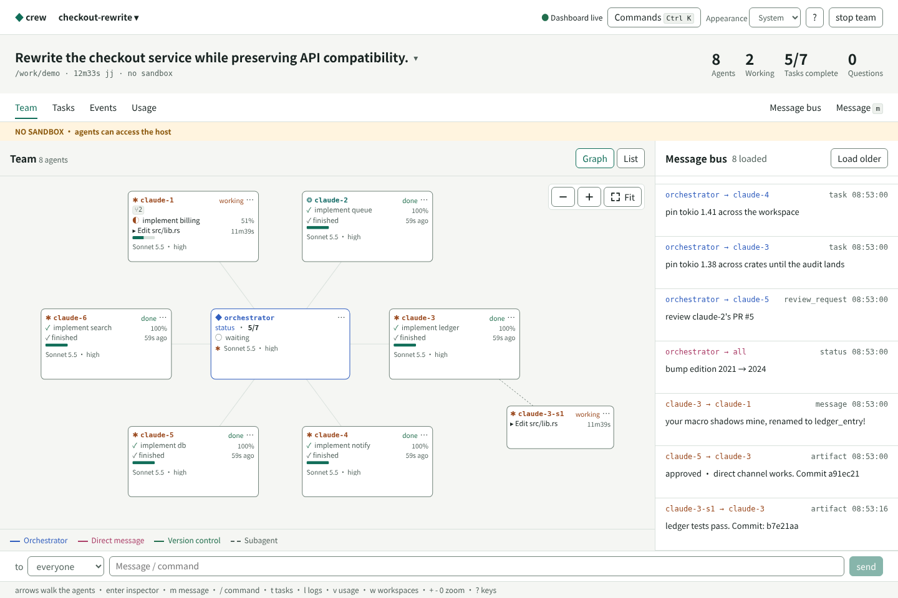
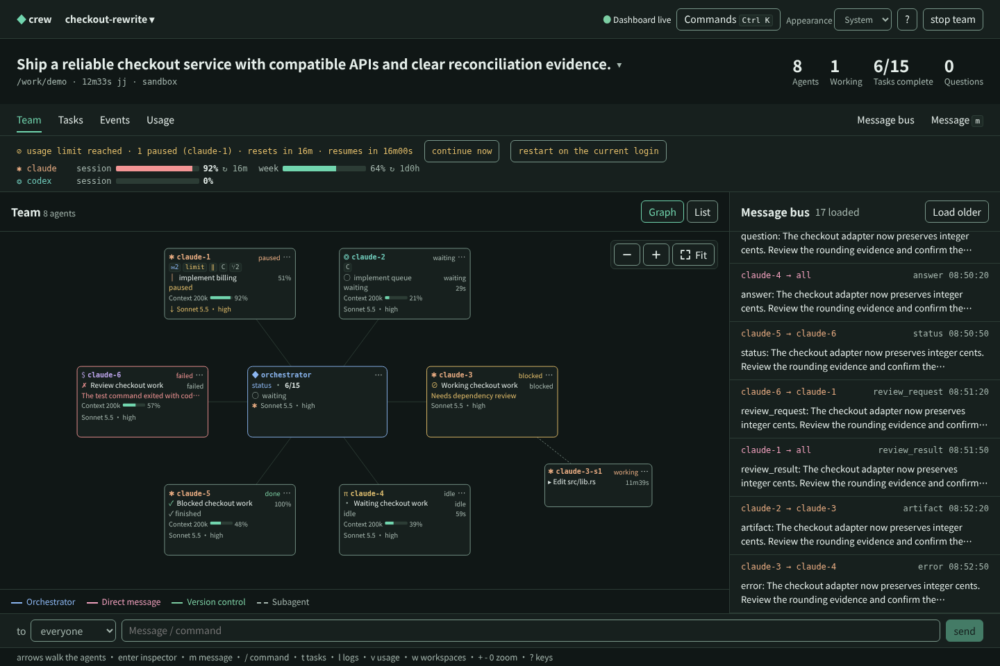
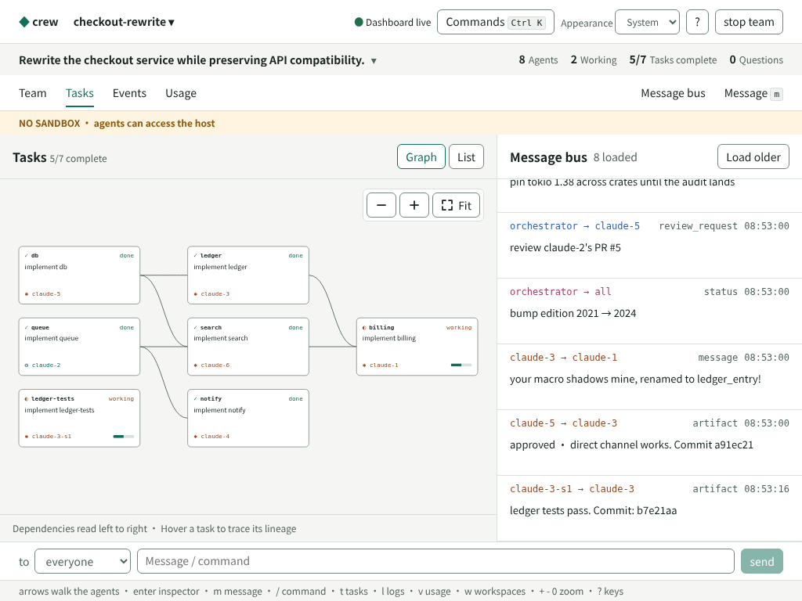
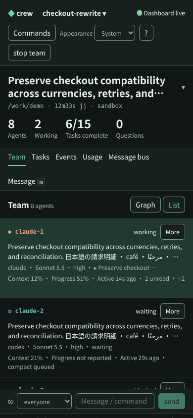
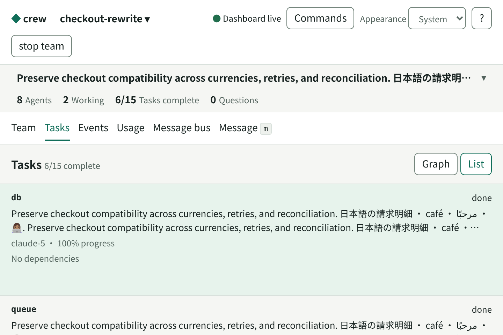
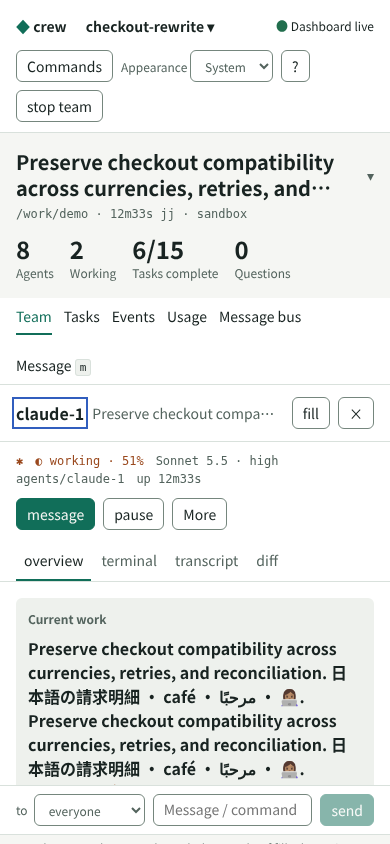
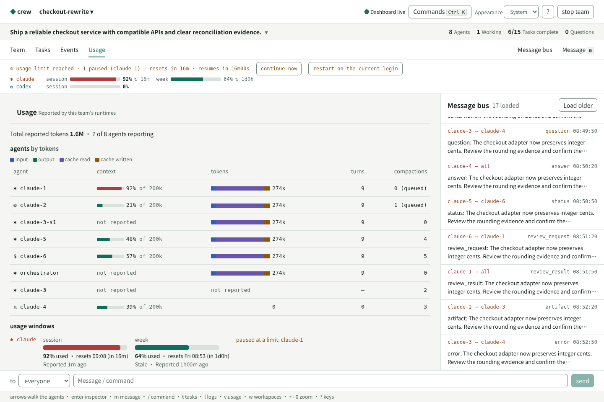
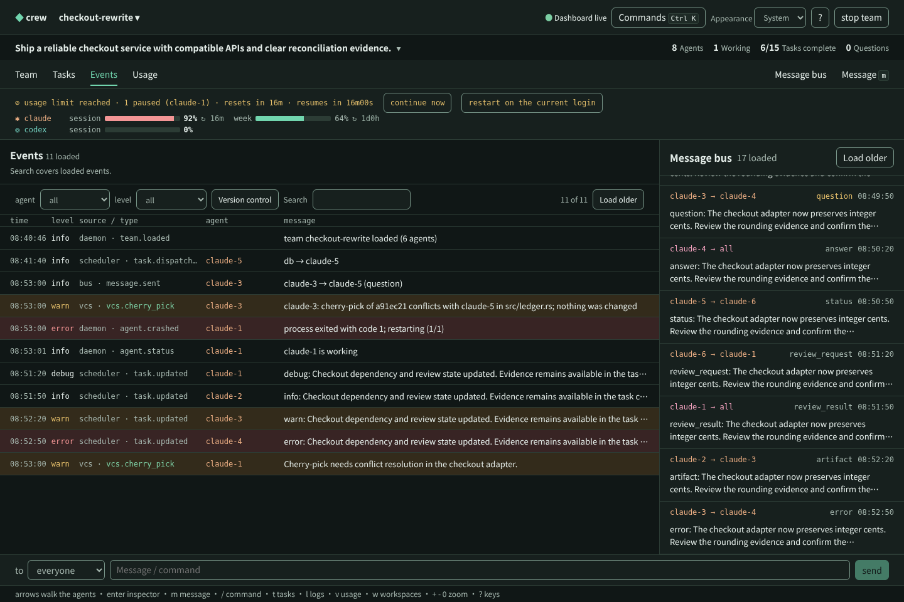
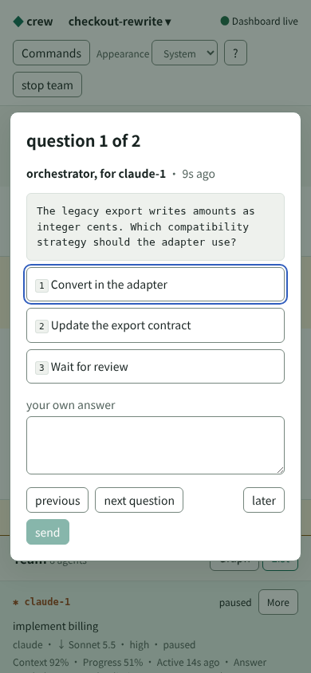
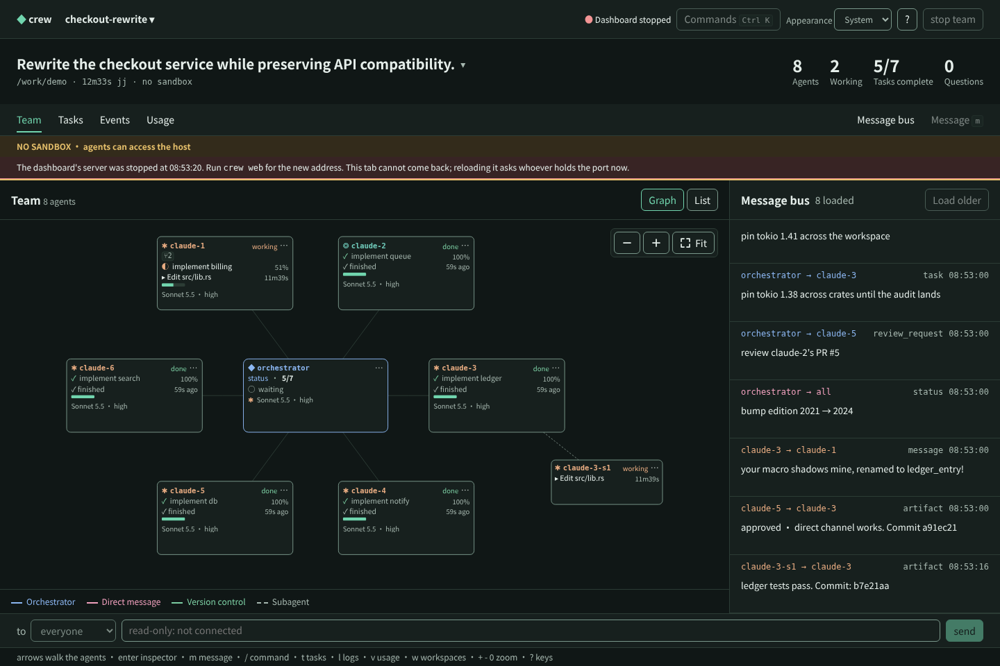
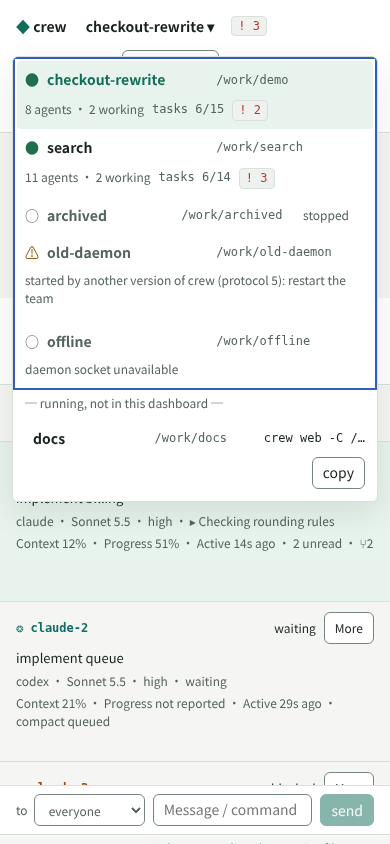
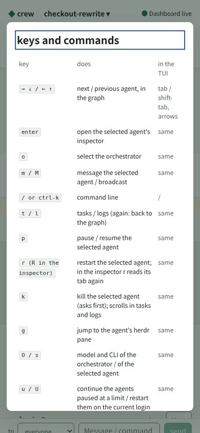
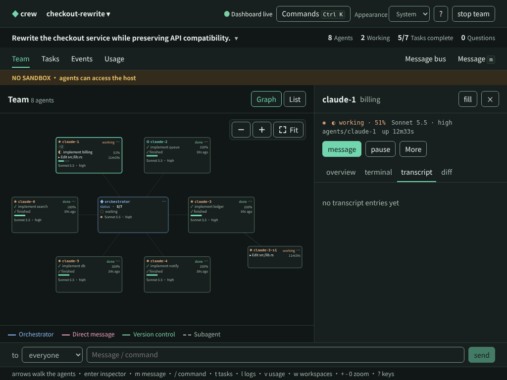
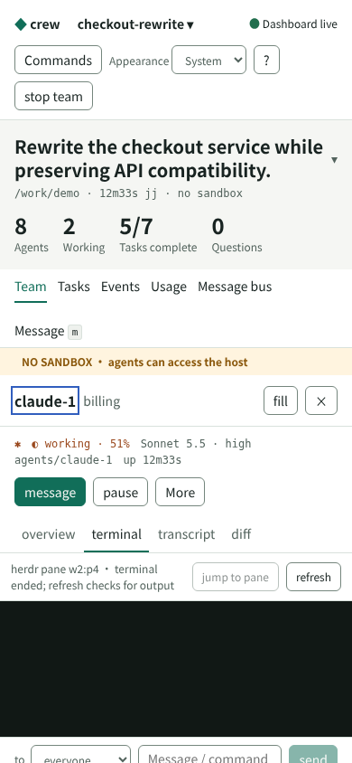
The initial review opened Help at Close and scrolled past its title. The delivered version focuses its heading at the top; Close and Escape remain available.